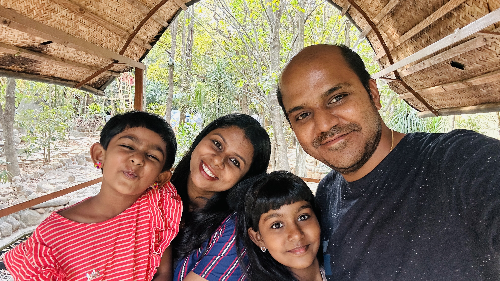
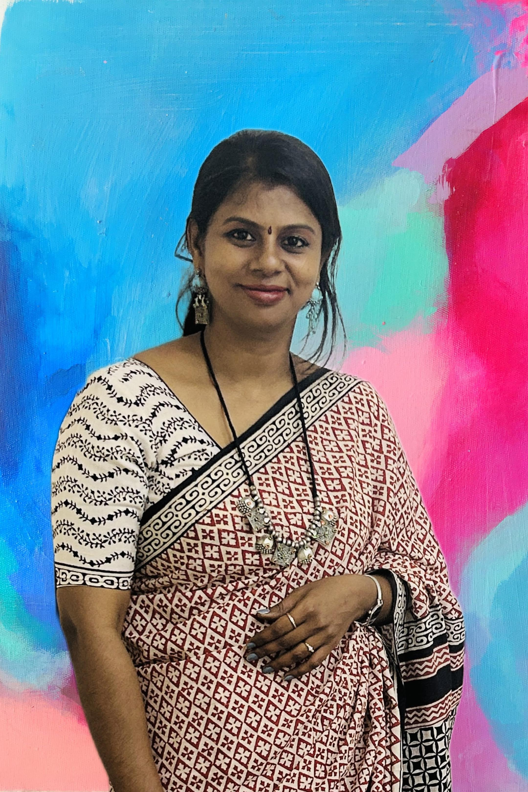
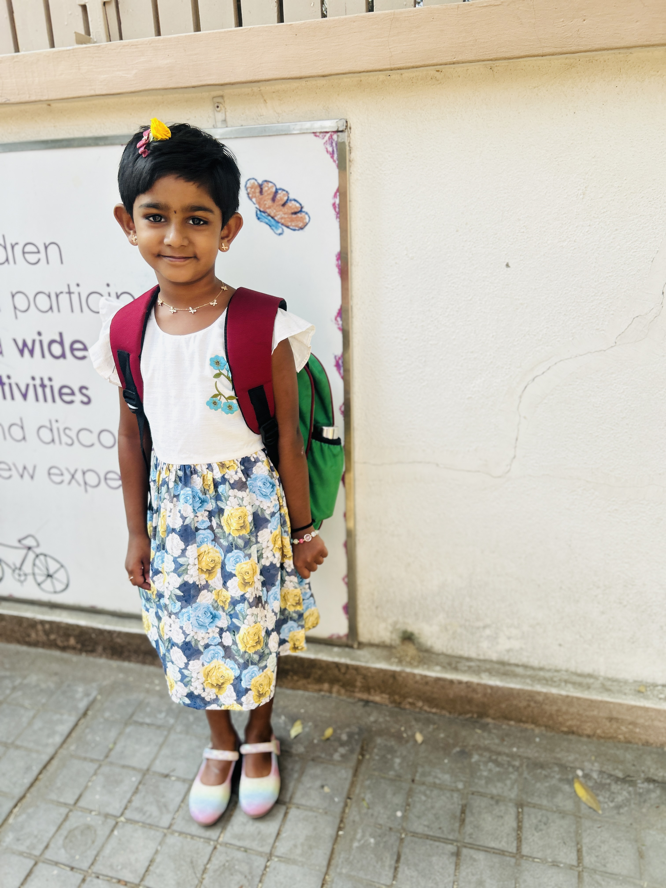

.
.
I live in a family of 4 members. 
My mom ,She owns a interior desighning company.
My dad ,he works in a IT. company as a manager.
My siter ,she studies in the grade M3.
I have a nick name called as Moumi. My parents and grandparents generally call me by my nick name. My parents are very conscious to my health. They wake me up daily in the morning at 6 am and tell me to do all the daily routines. I go to school at right time through school bus. I never get late. My school starts at 8 am in the morning and ends at 3 pm in the afternoon. My mom gives me healthy fruits for snack break. I read in 6th standard in the school, Gear Innovative International School . I am 11 years old and live in Banglore with my family. I also have joined dance and abacus classes out of the school as I like to learn dance and abacus very much. I enjoy my school time thoroughly with my friends and home time with my dearest parents and grandparents. I have very friendly neighbours; they understand each other and never quarrel. I love to spend time with my family in the holidays and . I am very good student in my school. I am very good in academic and sports activities. My school has a big ground a provides all the facilities of sports. My school has healthy, nice and peaceful environment.